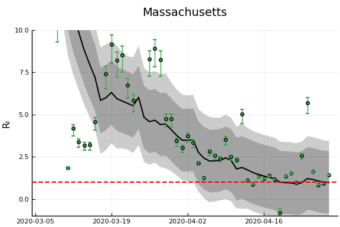

Longer Differences and Smoothing¶
One way to reduce $\sigma_k/\sigma_R$ is to reduce noise in new cases by taking a longer difference or smoothing case counts in some other way. How does this affect the estimation and interpretation of $R_t$?
As in the first section, we start with the approximate recursive relation If we instead look at a longer difference, where $\overline {T_{t,L} e^{\gamma(R_{t,L} - 1)}}$ is some intermediate value in between the minimum and maximum of the ${ \frac{\tau(t-i)}{\tau(t-i-1)} e^{\gamma (R_{t-i} - 1)} }_{i=0}^{L-1}$.
If testing is constant over time, we can then obtain an interpretable $\overline{R_{t,L}}$ by using $k_{t,L} =\log(C(t)-C(t-L))$ and following the procedure above.
If testing varies with time, it becomes hard to separate testing rate changes from $R_t$ after taking long differnces.
Note
The same analysis can be applied to other smoothing operations, i.e. using in place of $C(t) - C(t-L)$. However, there’s something strange about smoothing $C_t$, and then extracting a smoothed component of it using the Kalman filter. The inference afterwards is suspect; we would essentially be estimating a kernel regression of $C_t$ on time, and using the estimated regression as though it’s known with certainty.
When would long differences reduce variance? Well if $\Delta C(t) = \Delta C^\ast(t) + \epsilon_t$ with $\epsilon_t$ indepenedent over time with mean $0$ and constant variance, then you would need $C^\ast(t) - C^\ast(t-L)$ to increase faster than linearly with $L$. This is true if $C^\ast$ is growing exponentially.
Alternatively, if $\epsilon_t$ is not independent over time, but negatively correlated (as seems likely), then variance can decrease with $L$. For example, if $\Delta C(t) = C^\ast(t) - C^\ast(t-\delta)$ with $\delta$ a random, independent increment with mean $1$, then variance will tend to decrease with $L$ regardless of $C^\ast(t)$.
Results¶
Here, we will allow the initial and time varying mean of $R_{s,t}$ to depend on covariates.
reestimate=false
rlo=-1 #1 - eps(Float64)
rhi=1.2 #1+ eps(Float64)
K = size(X[1],2)
priors = (γ = truncated(Normal(1/7,1/7), 1/28, 1/1),
σR0 = truncated(Normal(1, 3), 0, Inf),
α0 = MvNormal(zeros(length(X0[1])), sqrt(10)), #truncated(Normal(1, 3), 0, Inf),
σR = truncated(Normal(0.25,1),0,Inf),
σk = truncated(Normal(0.1, 5), 0, Inf),
ρ = Uniform(rlo, rhi),
α = MvNormal(zeros(K), sqrt(10))
)
mdl = CovidRt.RtModel(dlogk, X, X0, priors);
trans = as( (γ = asℝ₊, σR0 = asℝ₊, α0 = as(Array, length(X0[1])),
σR = asℝ₊, σk = asℝ₊, ρ=as(Real, rlo, rhi),
α = as(Array, K)) )
P = TransformedLogDensity(trans, mdl)
∇P = ADgradient(:ForwardDiff, P)
p0 = (γ = 1/7, σR0=1.0, α0 = zeros(length(X0[1])), σR=0.25, σk=2.0, ρ=1.0, α=zeros(K))
x0 = inverse(trans,p0)
@time LogDensityProblems.logdensity_and_gradient(∇P, x0);
0.004435 seconds (9.88 k allocations: 3.749 MiB)
rng = MersenneTwister()
steps = 100
warmup=default_warmup_stages(local_optimization=nothing, #FindLocalOptimum(1e-6, 200),
stepsize_search=nothing,
init_steps=steps, middle_steps=steps,
terminating_steps=2*steps, doubling_stages=4, M=Symmetric)
x0 = x0
if !isfile("rt7.jld2") || reestimate
res = DynamicHMC.mcmc_keep_warmup(rng, ∇P, 2000;initialization = (q = x0, ϵ=0.1),
reporter = LogProgressReport(nothing, 25, 15),
warmup_stages =warmup);
post = transform.(trans,res.inference.chain)
@save "rt7.jld2" post
end
@load "rt7.jld2" post
p = post[1]
vals = hcat([vcat([length(v)==1 ? v : vec(v) for v in values(p)]...) for p in post]...)'
vals = reshape(vals, size(vals)..., 1)
names = vcat([length(p[s])==1 ? String(s) : String.(s).*"[".*string.(1:length(p[s])).*"]" for s in keys(p)]...)
cc = MCMCChains.Chains(vals, names)
display(plot(cc))

display(describe(cc))
2-element Array{ChainDataFrame,1}
Summary Statistics
parameters mean std naive_se mcse ess r_hat
────────── ─────── ────── ──────── ────── ──────── ──────
γ 0.0385 0.0029 0.0001 0.0003 132.3146 1.0065
σR0 2.8281 0.5418 0.0121 0.0572 113.0890 0.9995
α0[1] 0.5469 2.7217 0.0609 0.2931 99.3642 1.0448
α0[2] 0.6933 0.4014 0.0090 0.0341 172.0403 0.9997
α0[3] 0.2986 0.6375 0.0143 0.0614 100.0599 1.0063
α0[4] -0.4452 0.3038 0.0068 0.0262 195.2698 0.9996
α0[5] 0.2478 0.1095 0.0024 0.0112 121.4844 1.0340
σR 0.5091 0.0769 0.0017 0.0059 203.8605 1.0046
σk 0.1212 0.0020 0.0000 0.0001 575.1372 1.0058
ρ 0.9308 0.0101 0.0002 0.0009 108.8407 1.0004
α[1] 1.8508 1.0964 0.0245 0.1086 106.6214 1.0017
α[2] -1.0439 0.3832 0.0086 0.0333 181.0970 0.9995
α[3] -0.4451 0.9071 0.0203 0.1073 61.7527 1.0034
α[4] 0.7752 0.5842 0.0131 0.0609 91.7641 0.9995
α[5] 0.2955 0.7694 0.0172 0.0654 136.9157 1.0091
α[6] -0.3057 0.8170 0.0183 0.0756 143.7700 1.0035
α[7] 0.0815 0.3928 0.0088 0.0321 136.2739 0.9996
α[8] -0.5518 0.3379 0.0076 0.0346 92.6187 1.0033
α[9] -0.6664 0.4015 0.0090 0.0310 245.7335 1.0127
α[10] -0.2082 0.6136 0.0137 0.0507 121.5162 0.9995
α[11] -1.4219 1.8850 0.0421 0.1485 206.8016 0.9997
α[12] -0.1958 1.4144 0.0316 0.1245 152.7571 1.0038
α[13] -0.1600 0.3813 0.0085 0.0218 146.6336 1.0084
α[14] 0.3410 1.5600 0.0349 0.1338 124.4893 1.0092
α[15] 1.9749 1.6947 0.0379 0.1474 181.0001 1.0073
α[16] 5.0880 2.6987 0.0603 0.2208 145.4689 0.9996
α[17] 0.1485 1.4156 0.0317 0.0890 239.9660 1.0026
Quantiles
parameters 2.5% 25.0% 50.0% 75.0% 97.5%
────────── ─────── ─────── ─────── ─────── ───────
γ 0.0358 0.0365 0.0375 0.0395 0.0465
σR0 1.7611 2.4589 2.8184 3.1795 3.8813
α0[1] -4.5531 -1.1945 0.4954 2.3379 6.0640
α0[2] -0.0379 0.4001 0.6598 0.9733 1.5094
α0[3] -0.9143 -0.1588 0.2789 0.7493 1.5129
α0[4] -1.0730 -0.6398 -0.4254 -0.2319 0.0868
α0[5] 0.0396 0.1729 0.2473 0.3178 0.4616
σR 0.3652 0.4561 0.5064 0.5584 0.6667
σk 0.1174 0.1199 0.1212 0.1225 0.1251
ρ 0.9104 0.9238 0.9313 0.9380 0.9488
α[1] -0.3918 1.1371 1.9201 2.5812 3.8722
α[2] -1.7949 -1.3077 -1.0467 -0.7776 -0.2947
α[3] -2.1557 -1.0890 -0.4205 0.2087 1.2936
α[4] -0.2497 0.3631 0.7169 1.1773 2.0513
α[5] -1.2141 -0.2233 0.2882 0.8410 1.8069
α[6] -1.7900 -0.8927 -0.2866 0.2147 1.3484
α[7] -0.6582 -0.1937 0.0721 0.3492 0.9073
α[8] -1.1627 -0.7897 -0.5734 -0.3322 0.1783
α[9] -1.4786 -0.9486 -0.6595 -0.3898 0.0897
α[10] -1.3662 -0.6317 -0.2102 0.2032 0.9813
α[11] -5.0388 -2.7623 -1.3920 -0.1483 2.3063
α[12] -3.1257 -1.1466 -0.0938 0.7597 2.4948
α[13] -0.8987 -0.3931 -0.1742 0.0721 0.5773
α[14] -2.5921 -0.7414 0.2329 1.4249 3.5799
α[15] -1.3518 0.8072 1.9783 3.1373 5.3533
α[16] -0.1937 3.2641 5.0329 6.9496 10.4304
α[17] -2.6334 -0.7249 0.1287 1.0962 2.9368
display([1:length(x0vars) x0vars])
5×2 Array{Any,2}:
1 :constant
2 :logpopdens
3 Symbol("Percent.Unemployed..2018.")
4 Symbol("Percent.living.under.the.federal.poverty.line..2018.")
5 Symbol("Percent.at.risk.for.serious.illness.due.to.COVID")
display([1:length(xvars) xvars])
17×2 Array{Any,2}:
1 :constant
2 Symbol("Stay.at.home..shelter.in.place")
3 Symbol("State.of.emergency")
4 Symbol("Date.closed.K.12.schools")
5 Symbol("Closed.gyms")
6 Symbol("Closed.movie.theaters")
7 Symbol("Closed.day.cares")
8 Symbol("Date.banned.visitors.to.nursing.homes")
9 Symbol("Closed.non.essential.businesses")
10 Symbol("Closed.restaurants.except.take.out")
11 :retail_and_recreation_percent_change_from_baseline
12 :grocery_and_pharmacy_percent_change_from_baseline
13 :parks_percent_change_from_baseline
14 :transit_stations_percent_change_from_baseline
15 :workplaces_percent_change_from_baseline
16 :residential_percent_change_from_baseline
17 :percentchangebusinesses
states = unique(sdf.state)
states_to_plot = ["New York", "New Jersey","Massachusetts","California",
"Georgia","Illinois","Michigan",
"Ohio","Wisconsin","Washington"]
S = length(states_to_plot)
figs = fill(plot(), S)
for (i,st) in enumerate(states_to_plot)
s = findfirst(states.==st)
figr = CovidRt.plotpostr(dates[s],dlogk[s],post, X[s], X0[s])
l = @layout [a{.1h}; grid(1,1)]
figs[i] = plot(plot(annotation=(0.5,0.5, st), framestyle = :none),
plot(figr, ylim=(-1,10)), layout=l)
display(figs[i])
end

Another Derivation¶
An alternative (and easier) way to derive the same estimator will be described here. This approach will easily generalize to more complicated models, but let’s begin with the simplest SIR model with testing.
Then note that
and
which is the equation we have been using for estimation.
Incorporating death¶
If we add deaths to the model,
then,
Other observable states could similarly be added to the model.
Time delays¶
A drawback of the above approach is that it implies changes in $R_t$ show up in the derivatives of case and death numbers instantly. This is definitely not true. Instead consider a model where infections last $\ell$ days. After $\ell$ days, each infected person dies with probability $\pi$ and recovers otherwise. Then we have
Rearranging gives and
Note
These last two equations also hold in the model without time delay by setting $\ell=0$ and $\pi = \frac{p}{p+\gamma}$
Note
Random durations can be accomodated by replacing the shift by $\ell$ with a convolution.